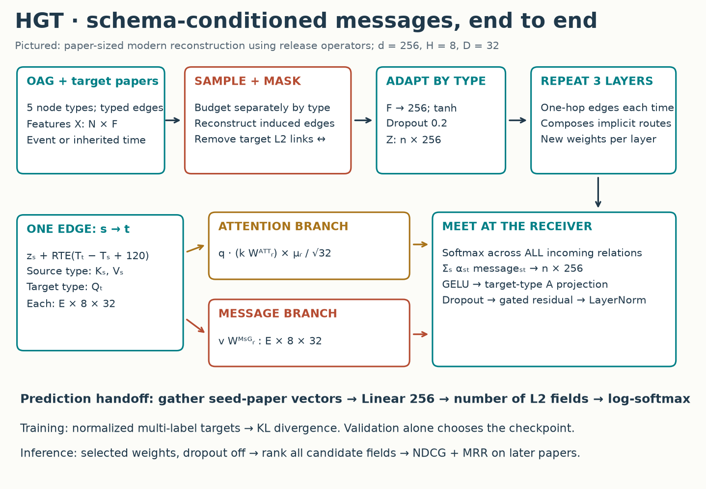
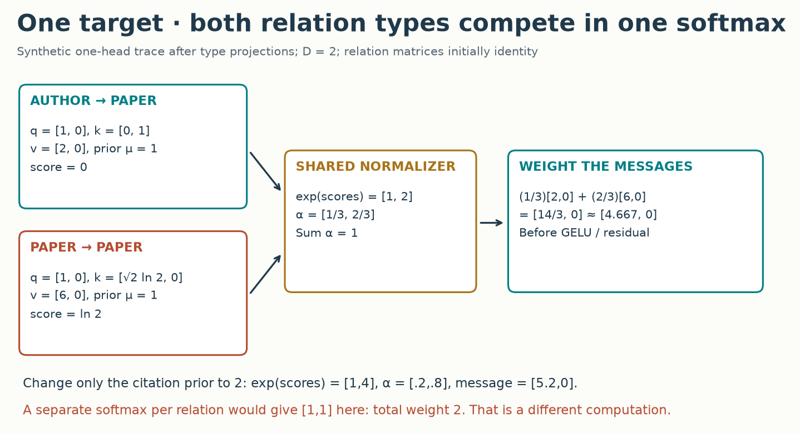
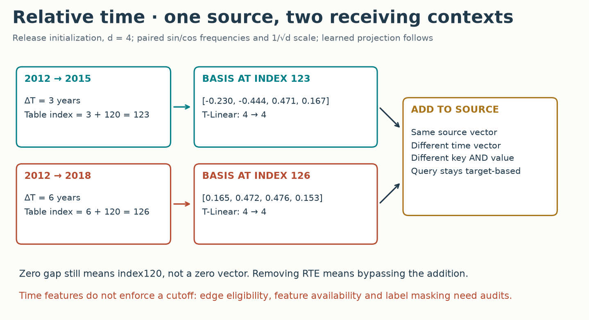
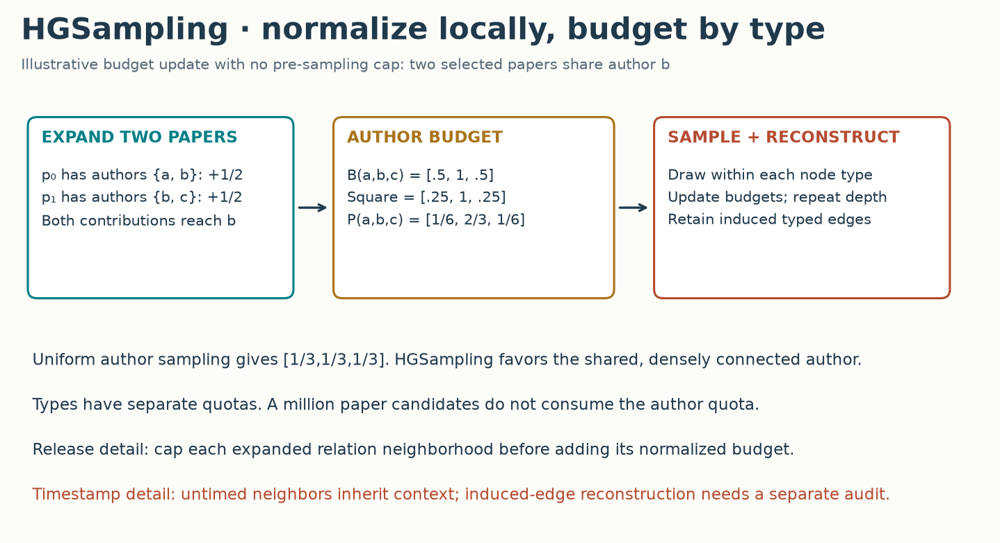
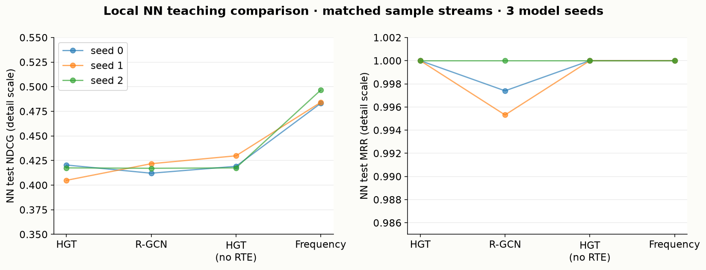

Year 3 · Quarter 2 · Lesson 093
HGT: typed attention through time
Your win today¶
Trace one timestamped, typed edge all the way to a prediction—and implement its attention correctly. Heterogeneous Graph Transformer (HGT) connects the graph's schema to its learned computation. You will explain what is shared, what depends on a relation, and why the softmax boundary matters.
Use three sittings: 20 minutes for the edge trace, 20 minutes for time and sampling, then the lab. The complete reproduction is a separate compute task. Start with retrieval; do not read the answers first.
Primary reading: Hu et al., Heterogeneous Graph Transformer, WWW 2020, Figure 2 and §§3–4. Read the pinned released implementation beside the equations. The implementation and the paper differ in several consequential places.
Cold retrieval¶
Before continuing, write these answers from memory:
- In R-GCN, lesson 91, which neighbors share a normalization denominator? Which weights depend on the relation?
- In HAN, lesson 92, what must you choose before training? What do node attention and semantic attention each normalize over?
- In GAT, lesson 84, does an attention weight tell you the numerical content of a message?
Check after committing your answers
R-GCN normalizes within each receiver/relation neighborhood, transforms with a relation matrix, then sums relation contributions. HAN requires predefined meta-path graphs; its node attention chooses neighbors inside one path and its semantic attention combines paths. An attention weight only scales a separately computed message. A large weight need not produce a large useful output.
1 · Why go beyond HAN?¶
Start with the limitation. Suppose the prediction target is a paper's research fields. Authors, venues, institutions and other papers can all help. HAN asks you to define useful routes such as paper–author–paper before fitting the model. A route you omit cannot acquire a HAN branch merely because training would find it useful.
Change the unit of computation. HGT starts with one-hop typed edges. One layer can bring an author's information to a paper. A second layer can bring that author's institution information along the same route. Stacking layers composes routes without constructing a separate adjacency matrix for every meta-path. This is the connection between paper Figure 1 and §3.4.
A node type describes the kind of entity: paper or author. A relation type describes an edge: cites or writes. A meta-relation is the triple (source node type, relation type, target node type). It is one step. A meta-path is a sequence of such steps.
In plain terms. Let authors and papers use different ways to describe themselves, but make their resulting messages comparable at the receiving paper.
HGT does not explicitly choose one discrete best path. A stack mixes many walks, with nonlinearities and residual paths between layers. Products of displayed attention weights are useful traces, not calibrated causal explanations.
2 · Model architecture¶

Read the picture from inputs to prediction. The graph supplies node features, node types, directed relation IDs and times. An input adapter maps each type's features to a common hidden width. This makes the tensor dimensions compatible without forcing every type to share the same projection.
Inside a layer, the same edge feeds two branches. The attention branch asks how strongly the target should listen. The message branch decides what numerical vector arrives. Their outputs meet in a weighted sum at the target. A target-type projection and residual update produce the next representation.
After the final layer, gather the seed papers—the papers selected for supervision in this batch. A linear classifier produces one score for each candidate level-2 field. A paper can have several valid fields. The released trainer normalizes its field indicators to sum to one and uses KL divergence against log-softmax predictions. At inference, turn those scores into a field ranking.
Shapes to keep on paper: input X[n,F]; adapted states Z[n,d]; queries, keys and values per edge [E,H,D], where D=d/H; attention weights [E,H]; messages [E,H,D]; output states [n,d]; supervised predictions [B,C] for B seed papers and C candidate fields.
The pictured reconstruction uses the paper's d=256, H=8, three layers. The release defaults to width 400 and four layers. The small NN teaching comparison uses width 32 and two layers. These are explicitly different experimental settings.
3 · One edge, three kinds of sharing¶
First: project by node type¶
A query describes what a receiver is looking for. A key describes what a sender offers. A value is the content to aggregate.
For source s, target t, head i:
q = Q[target_type](z_t)[head i] # D coordinates
k = K[source_type](z_s)[head i] # D coordinates
v = V[source_type](z_s)[head i] # D coordinates
The Q, K and V maps have separate parameters. Two author→paper relations can share the author's K/V maps and the paper's Q map. Changing writes-first to writes-last still changes the relation's matrices. A relation-specific full transform for every triple would forgo this sharing.
Second: transform by relation¶
The relation has an attention matrix and a message matrix, both D×D per head. They serve different purposes. The first modifies compatibility; the second transforms content. The release also learns one scalar prior per relation/head.
score(s,r,t,i) = dot(q, k @ W_attention[r,i]) * prior[r,i] / sqrt(D)
message(s,r,t,i) = v @ W_message[r,i]
Paper Eqs. 3–4 motivate this factorization. Read the notation carefully: the paper prints sqrt(d) and a meta-relation prior; the release uses sqrt(D) and relation/head priors. Our released-operator lane follows the code. Relation names in the OAG graph identify typed connections; the loader rejects ambiguous reused names rather than silently overwriting their meaning.
Third: normalize at the target¶
In plain terms. An author and a cited paper competing to inform the same target must appear in the same denominator.
For each receiver/head, softmax spans all incoming edges, across relation types. It does not span nodes elsewhere in the batch, and it is not applied separately to each relation. This is the live receiver_softmax task in the lab.
Worked example. One head has D=2. After projection, the receiving paper's query is [1,0]. An author has key [0,1] and value [2,0]. A cited paper has key [sqrt(2)·ln(2),0] and value [6,0]. With identity relation matrices and priors of one, their scores are 0 and ln(2).

Their unnormalized weights are 1 and 2. Softmax gives 1/3 and 2/3. The aggregate is [14/3,0] ≈ [4.667,0]. This is the value before the output nonlinearity, type projection, gate and normalization.
Now double only the citation prior. It multiplies the logit, so exp(2 ln2)=4. The weights become .2 and .8; the first output coordinate becomes 5.2. A prior is not an additive probability or a multiplier applied after softmax.
Stop and diagnose. If you normalize separately by relation in this two-edge example, each relation receives weight one. Their sum is two, and the message is [8,0]. You have changed the model, even though each local softmax looks correct.
Finish the layer¶
Concatenate the head outputs, apply GELU, and project with the receiver's type-specific A map. The release mixes this candidate with the old state using a=sigmoid(skip[type]), then optionally applies LayerNorm:
candidate = dropout(A[target_type](GELU(aggregate)))
new_state = LayerNorm(a * candidate + (1-a) * old_state)
The paper's Eq. 5 instead writes a simple additive residual. A gate initialized from skip=1 starts at about .731, not one. Copying only the attention equation does not reproduce the released layer.
4 · Relative time changes what the sender says¶
An author or venue may not have one natural timestamp. The sampler can assign it the time of the paper that brought it into the computation. A paper has an event time: its publication year. A relative time gap is the receiving node's assigned time minus the sending node's assigned time.
Worked example. A 2012 source paper contributes to a 2015 target with gap3, and to a 2018 target with gap6. Its original features are identical in both contexts. Its augmented source representation need not be.
The release uses a sinusoidal table initialized at integer indices 0…239. The data conversion adds 120 to the signed gap. A learned linear map transforms the selected row; its output is added to the source state before both K and V. The target query does not receive this source-side addition.

For the release initialization, even/odd coordinates share a frequency, and values are scaled by 1/sqrt(d). The printed paper Eqs. 6–9 use distinct even/odd exponents and no such scale or index shift. The lab's temporal_basis supports both printed and released formulas so you can identify the difference.
A subtle source bug. Setting embedding.requires_grad=False on the module does not freeze its weight parameter. The release does this, leaving the table trainable. The reconstruction preserves that observed behavior and verifies its gradients. A fixed-table alternative would be a distinct, declared intervention.
Prediction: does setting every gap to zero remove time information? No. Zero gap maps to table row 120, and the learned linear map can produce a nonzero vector. The no-RTE arm bypasses the addition entirely.
Scope check. RTE encodes time; it does not enforce causal data access. You must separately control edge availability, feature construction, label links and prediction cutoffs. The old release limits candidate expansion by time but reconstructs induced edges without checking their timestamps again. Its provided features also need a separate point-in-time provenance audit before use in a prospective database prediction task.
This distinction prepares you for temporal graph methods later in Year 3 and the time-aware database representations in Year 4.
5 · HGSampling makes the graph manageable¶
A seed node is a prediction target selected for the batch. A budget stores candidate neighbors and their accumulated sampling scores. Heterogeneous Graph Sampling maintains a separate budget for each node type.
Why separate budgets? If papers vastly outnumber institutions, globally sampling candidates can nearly erase the institution type. Per-type quotas keep the computation from being dominated simply by population size. They do not guarantee identical counts when a type has too few candidates.
Worked example. Selected paper p0 has authors a and b; selected paper p1 has authors b and c. Each paper contributes half a unit to each of its two authors. Budgets become [.5,1,.5]. Squaring and normalizing gives [1/6,2/3,1/6].

Author b is favored because it connects to both sampled papers. After drawing nodes without replacement inside each type, add their neighbors to the budgets, repeat to the requested depth, and reconstruct the induced graph among selected nodes. These are paper Algorithms 1–2.
The release first caps the neighbors considered in each expansion. It can also overwrite the inherited time of a candidate reached from several contexts. Our source-parity check compares actual sampled IDs, features, typed edges and relative times, not just their counts.
Do not confuse two depths. Sampling depth determines the available subgraph. Neural layer count determines how many message-passing steps the model performs inside it. The release samples to depth 6 but uses four neural layers by default.
Remove the answer from the graph¶
To predict a seed paper's L2 fields, remove both its paper→L2-field links and their reverse links from the sampled graph. Leaving the reverse relation preserves a route that directly reveals the answer. Other context nodes can still carry observed field relations under this released task.
The lab asserts both directions are absent for seed papers. It also records the split boundaries: training years before 2015; validation 2015–2016 inclusive; test years after 2016. The paper's prose overlaps at 2016; the code resolves the boundary explicitly. These splits do not by themselves prove that every precomputed feature was available at prediction time.
6 · Compare models without comparing different graphs¶
The lab uses the released NN subset of OAG, containing 66,211 nodes across five types. Its L2 prediction task has 8,489 training papers, 3,439 validation papers and 6,983 test papers; rankings span 4,782 candidate fields.
Three arms share source data, features, splits, seed targets, sampled subgraphs, optimizer, training budget and evaluation queries: HGT, a visible relation-mean R-GCN comparison, and HGT without RTE. All use the same width 32/two-layer budget. Equal width does not mean equal parameter counts; the table reports them. This R-GCN arm is a course comparison, not the unavailable original Table 2 baseline implementation.
Each run fits40 updates across 10 epochs. Validation NDCG alone selects the saved weights. Ten test batches of 32 papers are sampled afterwards. Batches may overlap; they are not ten independent datasets. Three model seeds measure run variability on this one graph.
Before looking at the results: could restricting the data to neural-network papers make one target field nearly universal? What would a classifier that always ranks that field first achieve under MRR?
Author-reference evidence, not your current kernel output. Nine complete neural fits on the NN graph. Mean ± sample SD across3 seeds.
| Arm | Trainable parameters | NN NDCG | NN MRR |
|---|---|---|---|
| HGT | 422,792 | 0.4143 ± 0.0083 | 1.0000 ± 0.0000 |
| R-GCN | 412,654 | 0.4170 ± 0.0048 | 0.9976 ± 0.0023 |
| HGT without RTE | 405,320 | 0.4221 ± 0.0067 | 1.0000 ± 0.0000 |
| Train-frequency baseline | 0 | 0.4880 ± 0.0075 | 1.0000 ± 0.0000 |
The most frequent training field is Artificial neural network, present in every training and test paper in this NN subset. A training-only frequency ranking reaches MRR 1.0 and higher NDCG than these small neural runs. That diagnosis matters more than declaring a winner among nearly tied neural arms. The baseline SD only reflects sampled queries; it has no model-initialization variability.

Metric diagnosis. MRR measures the reciprocal rank of the first relevant field. It can saturate while many other correct fields rank poorly. NDCG reflects more of the ranking, but you must state its exact discount. The release uses DCG “method0”: ranks1 and2 both have denominator1; rank3 has denominator log2(3). This differs from the common log2(rank+1) convention. The independent audit recomputes metrics from each query's relevant ranks.
Scope check. These are descriptive NN results. Neither close scores nor a winning arm establish a general HGT ranking. This lesson has one graph, one small configuration and only three model seeds. No multi-dataset statistical superiority claim is made.
7 · Full reproduction: name the claim before running¶
The named target is Table 2, CS Paper–Field L2, HGT with heterogeneity and RTE: NDCG .403 ± .041, MRR .439 ± .078, reported over five trainings. See the original table and settings. Those are cited paper results, not our measurements.
The CS and NN downloads are hash-pinned independently. CS bytes were acquired; identity to the exact paper-era snapshot is not established. The linked CS file was modified after publication. NN cannot substitute for CS because its selection changes the target distribution.
| Protocol element | Paper statement | Pinned release / reconstruction |
|---|---|---|
| Model width / layers | 256 / 3 | Default release400 /4; paper preset uses256 /3 |
| Heads / schedule | 8 /200 epochs | Preserved;32 batches ×2 reuse passes each epoch |
| Checkpoint choice | Lowest validation loss | Release highest validation NDCG; presets keep these separate |
| Attention scale | Printed sqrt(d) | Released sqrt(d/head count) |
| Residual update | Additive | Learned type gate and optional LayerNorm |
| Temporal basis | Fixed sinusoids as printed | Shifted, scaled, paired frequencies; table actually trainable |
| Labels / objective | Multiple field labels | Normalize indicators; batch-mean KL divergence |
| Sampling | HGSampling | Released capped-neighbor version, serial declared streams |
| Optimizer | AdamW + cosine annealing | Explicit defaults; released step counter begins at1500 |
| Evaluation | NDCG /MRR, five trainings | Released DCG convention; ten sampled test batches per fit |
| Feature provenance | XLNet /metapath2vec features | Supplied release features; raw feature extraction not rerun |
| Historical randomness | Original seeds unavailable | Five declared fresh seeds; no historical RNG identity claim |
Source chronology matters. We also archive the publication-era2020-04-16 code. It has triplet priors, no LayerNorm, different residual dropout and a different2d temporal table. The tested modern operator is not identical to that historical implementation. The exact revision behind Table 2 is unknown; the historical runtime replay remains unrun.
Why two large presets? release follows the published code defaults. paper changes the dimensions and selection rule explicitly stated in the paper while retaining the audited released operators. It is a reconstruction with remaining deviations, not a switch that makes those discrepancies disappear.
Executed: layer output/attention/gradient parity; two source-sampler comparisons; nine small NN fits; training-frequency baseline; one paper-width update on NN. Not executed: full CS five-run target, historical runtime and full-paper suite. CS loading exceeded a declared 10 GiB virtual-memory guard; Modal rejected the GPU invocation because a payment method was required. Full-paper parity remains NOT_ESTABLISHED, historical comparison INCOMPARABLE. These are actual blockers, not successful reproduction results.
The complete loader, sampler, model, objective, optimizer, checkpoint selection and evaluation are visible in the notebook. The CLI and GPU entrypoint use the same canonical implementation. The reproduction contract contains exact commands, hashes, measured coverage and the remaining full-paper work.
8 · Lab: three live tasks and a defensible report¶
Student notebook · Prepared notebook view · Teacher solution · Compact reference
- TODO: receiver softmax. Normalize each receiver/head over all incoming relations. CHECK distinguishes receiver grouping from global and per-relation normalization.
- TODO: relation attention and message. Compute separate relation transforms for keys and values, and scale logits by head width. CHECK traces the
[4.667,0]example and gradients. - TODO: temporal basis. Build the specified released and printed-paper bases. CHECK verifies origin, frequency, scale and distinct time responses. The initialized basis is called by the actual temporal module.
The rest is PROVIDED, but not hidden. Read the sampler and trainer in separate annotated cells. First run the one-update NN diagnostic. Then run the matched three-seed teaching comparison. The CS reproduction cell is gated off by default and documents its memory/GPU requirements.
EXIT: submit the checks, per-seed results, the training-frequency baseline, and a 150–250-word defense. Explain why normalization crosses relation types, where time enters, how label edges are masked, what the NN comparison establishes, and which reproduction gaps remain. Authored or pre-executed materials do not establish your mastery: PENDING_WRITTEN_DEFENSE.
Carry this forward¶
R-GCN taught relation-specific transforms. HAN taught explicitly constructed semantic routes. HGT combines node-type projections with relation transforms and composes routes through depth. The next curriculum lesson, 94, organizes these methods into a heterogeneous-information-network taxonomy. Later, RelGT will revisit type, structure and time inside a database-oriented Transformer.
Tomorrow, retrieve the softmax denominator without looking. In three days, derive why zeroing the time gap differs from disabling RTE. Ask the teacher to challenge any unclear equation, sampler step or reproduction claim before moving on.